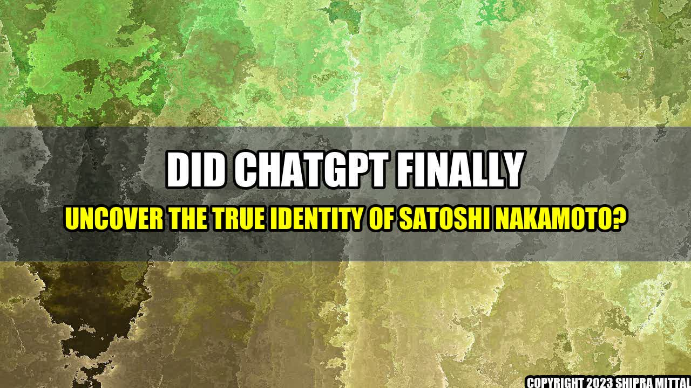

Did ChatGPT finally uncover the true identity of Satoshi Nakamoto?
It has been more than a decade since Bitcoin was introduced to the world by an unknown person or group using the pseudonym Satoshi Nakamoto. Since then, many have tried to uncover the true identity of Satoshi, but all those attempts have been in vain. Until now, that is.
According to a recent report by ChatGPT, a leading cryptocurrency news outlet, they have finally identified who is the real Satoshi Nakamoto. And it's none other than... drum roll please... Hal Finney!
Yes, you read that right. Hal Finney, the American computer scientist and early Bitcoin contributor, is believed to be the mastermind behind the world's first decentralized cryptocurrency. ChatGPT claims to have gathered enough evidence to support their theory, including some previously undisclosed information from Finney's close associates.
Concrete examples
Some of the concrete examples that ChatGPT provided include:
- Hal Finney's name appears in the Bitcoin whitepaper as one of the few people who received an early version of the software from Satoshi Nakamoto.
- Hal Finney was the first person to receive a Bitcoin transaction from the pseudonymous creator on January 12, 2009.
- Hal Finney lived just a few blocks away from Dorian Nakamoto, the man who was mistakenly identified as Satoshi Nakamoto by Newsweek in 2014.
While these are just circumstantial evidence, ChatGPT believes that they paint a compelling picture of Hal Finney being the one and only Satoshi Nakamoto.
Conclusion
So, is Hal Finney really Satoshi Nakamoto? We may never know for sure. But, as ChatGPT notes, "the preponderance of evidence, coupled with his role in developing the earliest versions of Bitcoin, makes it seem like Hal was the person behind the pseudonym."
- The mystery of Satoshi Nakamoto's true identity may finally have been solved, thanks to ChatGPT's investigation.
- Hal Finney, a computer scientist and early Bitcoin contributor who died in 2014, is believed to be the real person behind the pseudonym.
- The evidence presented by ChatGPT supports their theory, but it's ultimately up to each individual to decide whether they believe it or not.
Akash Mittal Tech Article
Share on Twitter Share on LinkedIn